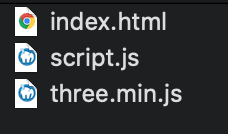

Introduction
For our first lesson, we will make Three.js works the most straightforward way: no bundler, no dependency, no modules, just an HTML file, and some JavaScript.
Base files
To begin, create a plain index.html file:
And a simple script.js file:
Open the index.html in your browser. To do that, you can try to double click
on the file. If it doesn't work or it opens with the wrong browser, you can drag and drop the file onto the
right browser. Even if Three.js will work on most browsers, I recommend using a developer-friendly browser
like Chrome or Firefox.
Now open the Developer Tools.
To do that, you can right click anywhere on the page and choose Inspect or
you can press F12 on Windows and CMD + OPTION + I on MacOS.
Then navigate to the Console tab on top of the Developer Tools.
You should keep the Console open at all time to see potential errors and warnings.
How to load Three.js
Now we need to load the Three.js library.
There are many ways of doing it. For now, we will simply download the library and load it using <script>.
Go to https://threejs.org/ and click on the download button to download a zip file and unzip it. The file is quite heavy, but don't worry, we only need one file from it.
You should get a folder that looks like this:

Go to the build/ folder and copy the three.min.js file to your project.
You should get something like this:

We can now load the Three.js library at the end of the <body>, right
before closing it:
Make sure to load three.min.js before your script.js; otherwise, your script will not be aware of what's inside the three.min.js file.
How to use Three.js
Inside of our script.js file, we now have access to a variable named THREE. Be careful and always write it using uppercase.
If you console.log() this variable, you'll see that there is a lot going on
inside:
The THREE variable contains most of the classes and properties you might need
on a classic Three.js project. Unfortunately, not all classes are inside this variable, but we will see
later how to access them.
To use one of those classes, you need to instantiate it. For example, if you want to create a scene, you'll
write const scene = new THREE.Scene(). If you want to create a sphere
geometry, you need to write const sphereGeometry = new THREE.SphereGeometry(1.5, 32, 32) —We'll dig deeper
into these later.
First scene
It's time to create our scene and produce something on the screen.
We need 4 elements to get started:
- A scene that will contain objects
- Some objects
- A camera
- A renderer
Scene
The scene is like a container. You place your objects, models, particles, lights, etc. in it, and at some point, you ask Three.js to render that scene.
To create a scene, use the Scene class:
Objects
Objects can be many things. You can have primitive geometries, imported models, particles, lights, and so on.
We will start with a simple red cube.
To create that red cube, we need to create a type of object named Mesh. A Mesh is the combination of a geometry (the shape) and a material (how it looks).
There are many geometries and many materials, but we will keep things simple for now and create a BoxGeometry and a MeshBasicMaterial.
To create the geometry, we use the BoxGeometry class with the first 3 parameters that correspond to the box's size.
To create the material, we use the MeshBasicMaterial
class with one parameter: an object {} containing all the options. All we
need is to specify its color property.
There are many ways to specify a color in Three.js. You can send it as a JS hexadecimal 0xff0000, you can send it as a string hexadecimal '#ff0000', you can use color names like 'red',
or you can send an instance of the Color class —we'll cover more about it
later.
To create the final mesh, we use the Mesh class and send the geometry and the material as parameters.
You can now add your mesh to the scene by using the add(...) method:
If you don't add an object to the scene, you won't be able to see it.
Camera
The camera is not visible. It's more like a theoretical point of view. When we will do a render of your scene, it will be from that camera's point of view.
You can have multiple cameras just like on a movie set, and you can switch between those cameras as you please. Usually, we only use one camera.
There are different types of cameras, and we will talk about these in a future lesson. For now, we simply need a camera that handles perspective (making close objects look more prominent than far objects).
To create the camera, we use the PerspectiveCamera class.
There are two essential parameters we need to provide.
The field of view
The field of view is how large your vision angle is. If you use a very large angle, you'll be able to see in
every direction at once but with much distortion, because the result will be drawn on a small rectangle. If
you use a small angle, things will look zoomed in.
The field of view (or fov) is expressed in degrees and corresponds to the
vertical vision angle. For this exercise we will use a 75 degrees angle.
Here's a video to explain what the field of view variation looks like:
The aspect ratio
In most cases, the aspect ratio is the width of the canvas divided by its height. We haven't specified any width or height for now, but we will need to later. In the meantime, we will create an object with temporary values that we can re-use.
Don't forget to add your camera to the scene. Everything should work without adding the camera to the scene, but it might result in bugs later:
Renderer
The renderer's job is to do the render. Bet you didn't see that coming?
We will simply ask the renderer to render our scene from the camera point of view, and the result will be drawn into a canvas. You can create the canvas by yourself, or let the renderer generate it and then add it to your page. For this exercise, we will add the canvas to the html and send it to the renderer.
Create the <canvas> element before you load the
scripts and give it a class:
To create the renderer, we use the WebGLRenderer class with
one parameter: an object {} containing all the options. We need to specify
the canvas property corresponding to the <canvas> we added to the page.
Create a canvas variable at the start of the code, then fetch and store in it
the element we created in the HTML using document.querySelector(...).
It's better to assign the canvas to a variable because we'll use it for other purposes in the next lessons.
We also need to update the size of your renderer with the setSize(...) method
using the sizes object we created earlier.
The setSize(...) method will automatically resize our <canvas> accordingly:
If you refresh the page, you should see a black canvas of 800px width and 600px large.
First render
It's time to work on our first render. Call the render(...) method on the
renderer and send it the scene and the camera as parameters:
Still nothing? Here's the issue: we haven't specified our object's position, nor our camera's. Both are in the default position, which is the center of the scene and we can't see an object from its inside (by default).
We need to move things.
To do that, we have access to multiple properties on each object, such as position, rotation, and scale. For now, use the position property to
move the camera backward.
The position property is an object with three relevant properties: x, y and z. By
default, Three.js considers the forward/backward axis to be z.
To move the camera backward, we need to provide a positive value to that property. You can do that anywhere
once you've created the camera variable, yet it has to happen before you do
the render:

Congratulations, you should see your first render. It looks like a square, and that's because the camera aligns perfectly with the cube, and you can see only one side of it.
Don't worry about the render's size; we'll learn how to make the canvas fit the viewport later.
In the next lessons, you will learn more about the position, rotation and scale properties, how to change
them, and animate the scene.